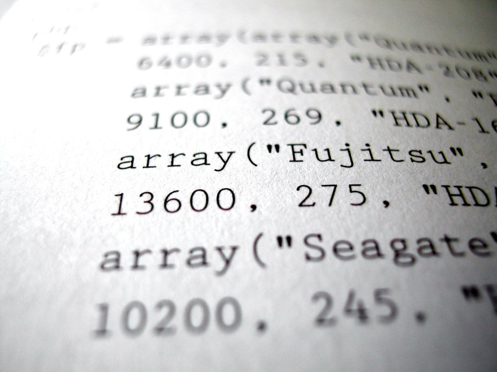

Student Mode

Analyze student work at a per student basis. Requires the upload of a single database. Select the assignments to be looked over.
An instructor needs ways to evaluate students when teaching new programming skills. A student’s progress throughout a class must be recorded so the teacher knows where the student needs to improve and how to improve instruction material. Currently, assignments are static when handed in; they do not indicate how a student got to their end resulting product. If students' progress on an assignment can be recorded and analyzed, formative feedback can be provided to students and instructors. This would not make sense to implement manually as it would take too much time of the teaching staff. To combat this issue, this software can help the teaching staff provide a better experience for the students.
Analyze student work at a per student basis. Requires the upload of a single database. Select the assignments to be looked over.
Upload many student databases at once to analyze the overall trend of a class over time. All assignments are automatically selected. Date range choices can be applied.
Morbi interdum mollis sapien. Sed ac risus. Phasellus lacinia, magna lorem ullamcorper laoreet, lectus arcu.
Ut convallis, sem sit amet interdum consectetuer, odio augue aliquam leo, nec dapibus tortor nibh sed.
Suspendisse mauris. Fusce accumsan mollis eros. Pellentesque a diam sit amet mi ullamcorper vehicula.